#1 · Тройная шестерня
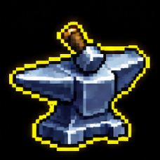
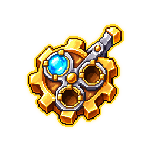
Дополнительная характеристика при улучшении оружия
Общий лист · Сравнение · Таблица
#1 · Тройная шестерня


Дополнительная характеристика при улучшении оружия
#2 · Кровопечать
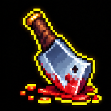
Кража жизни и удары накладывают метку крови
#3 · Жар-уголь
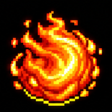
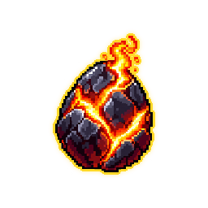
Шанс поджечь противников драконьим огнём
#4 · Полдень
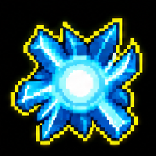
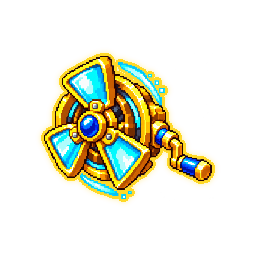
Сокращение перезарядки и восстановление энергии по описанию сайта
#5 · Колокол милосердия
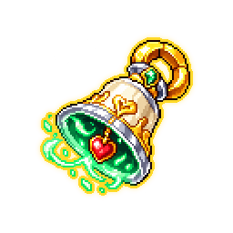
Здоровье и регенерация; лечение излучает урон
#6 · Ножницы судьбы
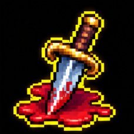
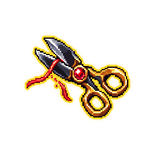
Редкое добивание навсегда повышает урон в забеге
#7 · Гвоздь грозы
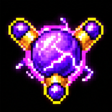
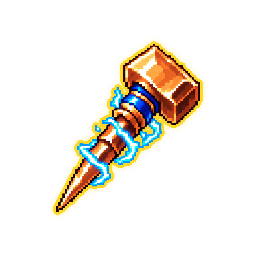
Молния при ударе с возможностью оглушения
#8 · Золотое обещание
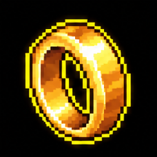
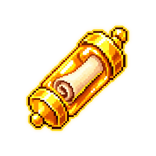
Эффект оригинала на сайте не подтверждён
#9 · Ядовитые счёты
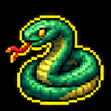
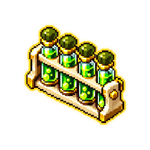
Четыре стака яда при попадании
#10 · Взломщик предела
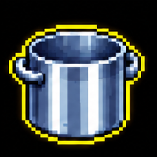
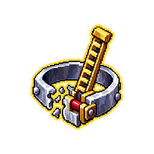
Повышение предела уровней оружия
#11 · Два блуждающих огня
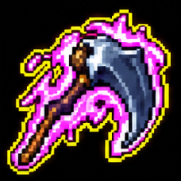
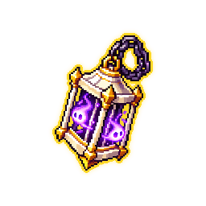
Убийство выпускает две самонаводящиеся души
#12 · Маятник кризиса
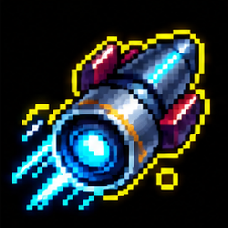
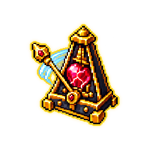
При низком здоровье получение урона замедляет время и усиливает атаки
#13 · Воронка осколков
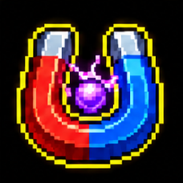
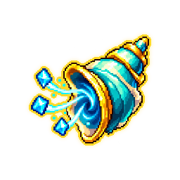
Периодически притягивает осколки опыта
#14 · Реликварий тишины
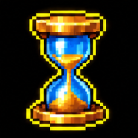
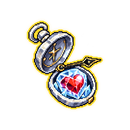
Один раз предотвращает смерть и останавливает время
#15 · Вторая искра
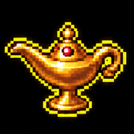
Дополнительный бросок вероятности для эффектов при ударе
#16 · Громовой таран
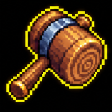
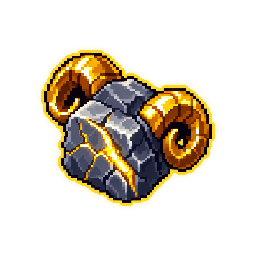
Редкий удар с очень большим множителем урона
#17 · Багровая цистерна
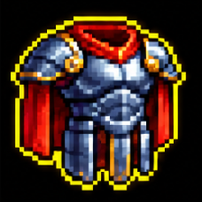
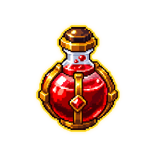
Кража жизни и запас лечения сверх максимального здоровья
#18 · Третий стук
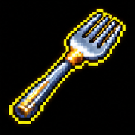
Критические удары превращаются в усиленные мегакриты
#19 · Долгая пауза
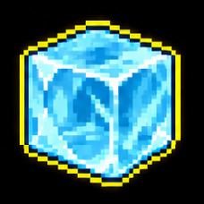
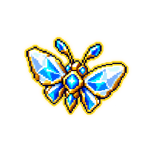
Шанс заморозить противника при попадании
#20 · Ударный барабан
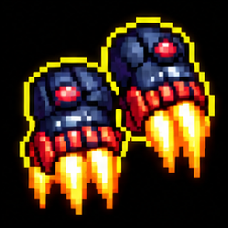
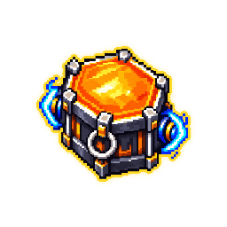
Шанс взрыва, который наносит урон и отбрасывает врагов
#21 · Ударная капсула
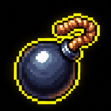
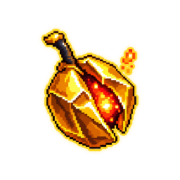
Атаки могут вызывать взрыв по области
#22 · На север
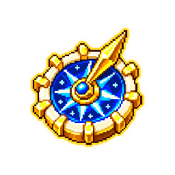
Повышение предела уровней томов
#23 · Призма рассвета
Периодический импульс вокруг персонажа
#24 · Руки порчи
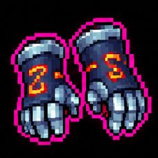
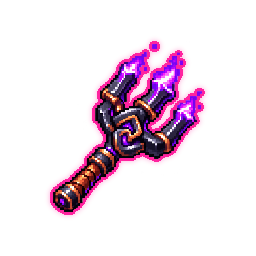
Проклятие при ударе с ценой в здоровье и сложности
#25 · Чужой след
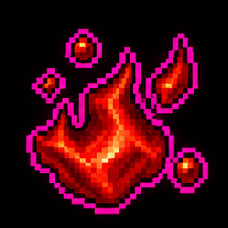
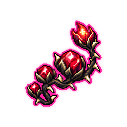
Урон накапливается за убийства
#26 · Бумажная луна
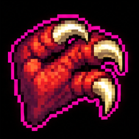
Подбрасывание врагов и бонус урона по воздушным целям
#27 · Фитиль берсерка
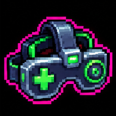
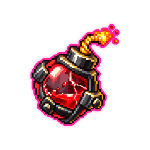
Чем меньше здоровья, тем больше урон
#28 · Последняя остановка
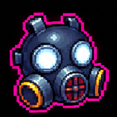
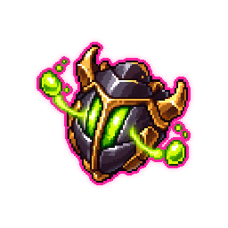
Броня и запас сверхлечения от отравленных врагов рядом
#29 · Взрывное пиво
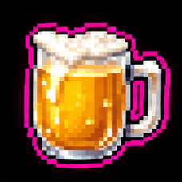
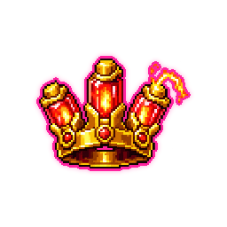
Критические попадания могут взрываться
#30 · Обходной путь
Летящие осколки опыта наносят урон врагам
#31 · Улей возмездия
Убийства могут выпускать ракеты
#32 · Сухой сезон
Получение урона выпускает длительное ядовитое облако
#33 · Затакт
Скорость движения преобразуется в скорость атаки
#34 · Коробка назло
Удары могут причинять безопасный урон себе и запускать связанные эффекты
#35 · Горшок награды
Дополнительные горшки на будущих этапах и усиление наград
#36 · Второе мнение
Дополнительный снаряд для оружия
#37 · Пятый угол
Лечебная область у заряжаемого святилища и дополнительные святилища
#38 · Свисток паники
Постоянная скорость движения и ускорение после получения урона
#39 · Игла сшивания
Критические удары могут лечить
#40 · Растущий костный мозг
Убийства накапливают максимальное здоровье
#41 · Почтовый ветер
Шанс дополнительного осколка опыта за убийство
#42 · Жетон добычи
Больше золота за убийства
#43 · Золотой ушиб
Золото за получение урона
#44 · Мягкая посадка
Золото за пройденное расстояние
#45 · Железный корень
Постоянный бонус к урону
#46 · Тихий гость
Урон постепенно растёт во время неподвижности
#47 · Улыбка шута
Урон шипами может вызывать взрывы
#48 · Кровососный камень
Больше максимального здоровья ценой меньшей регенерации
#49 · Призма рикошета
Отражение урона и краткая неуязвимость после попадания
#50 · Споровые перчатки
Удары создают длительное ядовитое облако
#51 · Капюшон ускользания
После уклонения усиленный удар и краткие бонусы скорости
#52 · Дымная пуговица
Повышение шанса уклонения
#53 · Отлив
Магия крови при ударе с уроном по области и лечением
#54 · Шестое чувство
Броня усиливает урон шипами
#55 · Длинные выходные
Периодическая молния при попадании
#56 · После обеда
Увеличение получаемого опыта
#57 · Алое веретено
Удары могут накладывать метку крови
#58 · Ключ святилищ
Быстрее заряжаются святилища и выше их награды
#59 · Между строк
Больше элитных противников
#60 · Импульсная батарея
Постоянный бонус скорости атаки
#61 · Позвонок титана
Урон растёт от максимального здоровья
#62 · Перец безрассудства
Больше урона ценой части максимального здоровья
#63 · Бродяга
Пройденное расстояние вызывает атакующего призрака
#64 · Запасная минута
Убийства могут оставлять лечебный предмет
#65 · Клин исполиноборца
Дополнительный урон элитам и боссам
#66 · Короткий ответ
Дополнительный урон ближайшим врагам
#67 · Мешочек шипов
Получение урона выпускает шипы
#68 · Тихие угли
Лечение во время неподвижности
#69 · Монета удачи
Повышение удачи
#70 · Пропуск удачи
Открытие сундуков повышает удачу, но сундуки дорожают
#71 · Трофейный пропуск
Открытие сундуков накапливает урон
#72 · Стежок порчи
Проклятие нескольких целей с уроном от их здоровья
#73 · Живой контакт
Получение урона вызывает электрический разряд вокруг
#74 · Пружинный шаг
Усиление прыжка и дополнительный прыжок
#75 · Красный фокус
Повышение шанса критического удара
#76 · Непоседливый дух
Взаимодействия с объектами вызывают призраков
#77 · Морозный скол
Заморозка при ударе и добивание ослабленных врагов
#78 · Свободная защёлка
Шанс бесплатно открыть сундук
#79 · Полевая аптечка
Постоянная регенерация здоровья
#80 · Кислый ломтик
Шанс отравить врага при попадании
#81 · Крепкий сухарь
Повышение максимального здоровья
#82 · Высотный штифт
Дополнительный урон в воздухе
#83 · Кость рока
Повышение сложности забега
#84 · Первое лезвие
Бонус урона по противникам с почти полным здоровьем
#85 · Клубок ветра
Повышение скорости движения